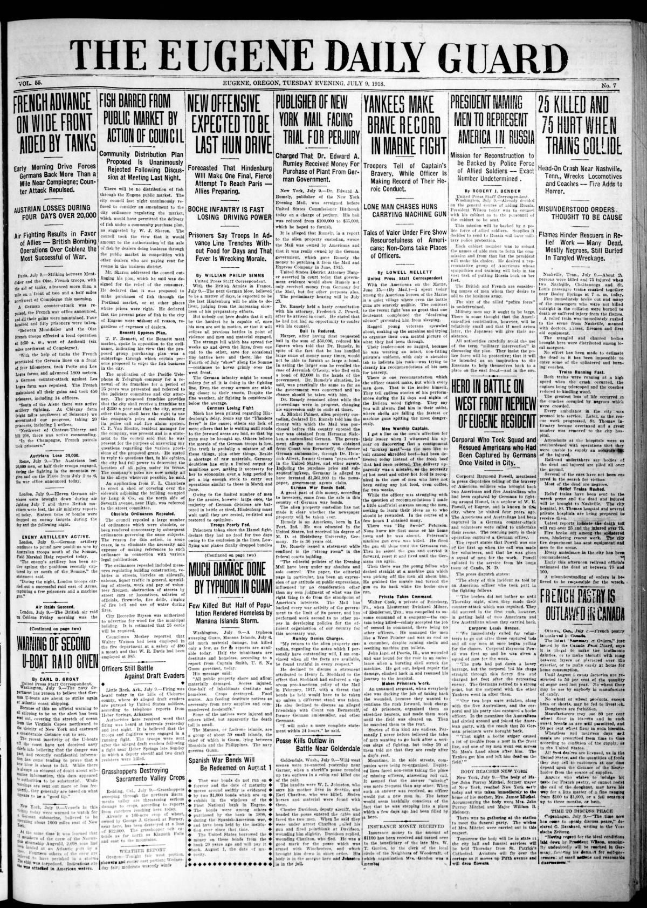
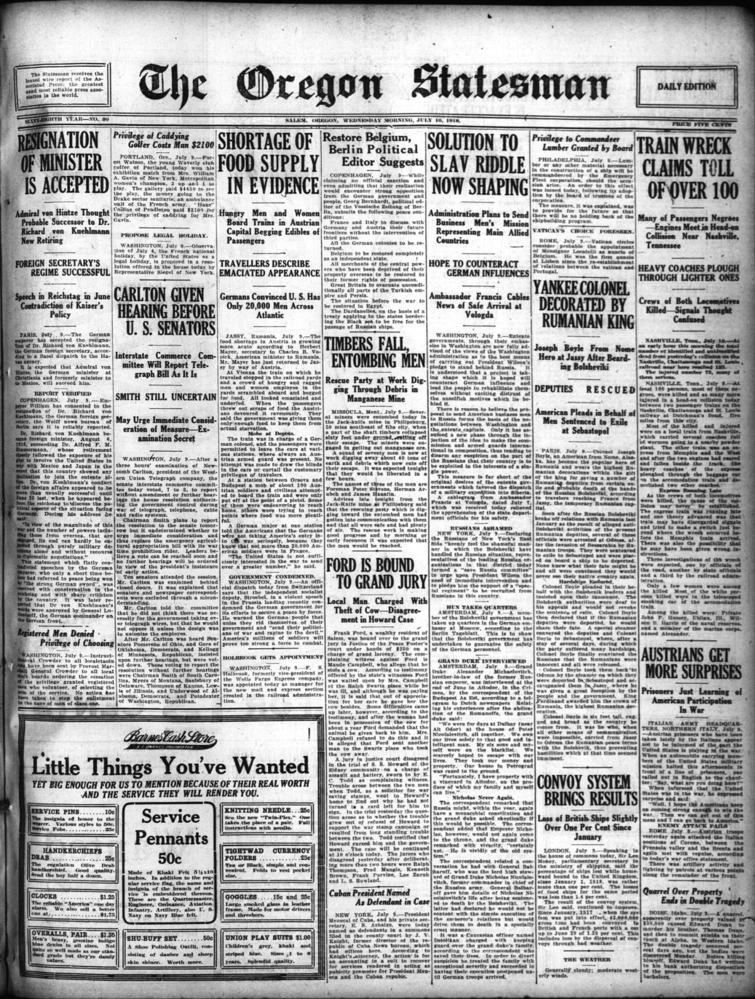
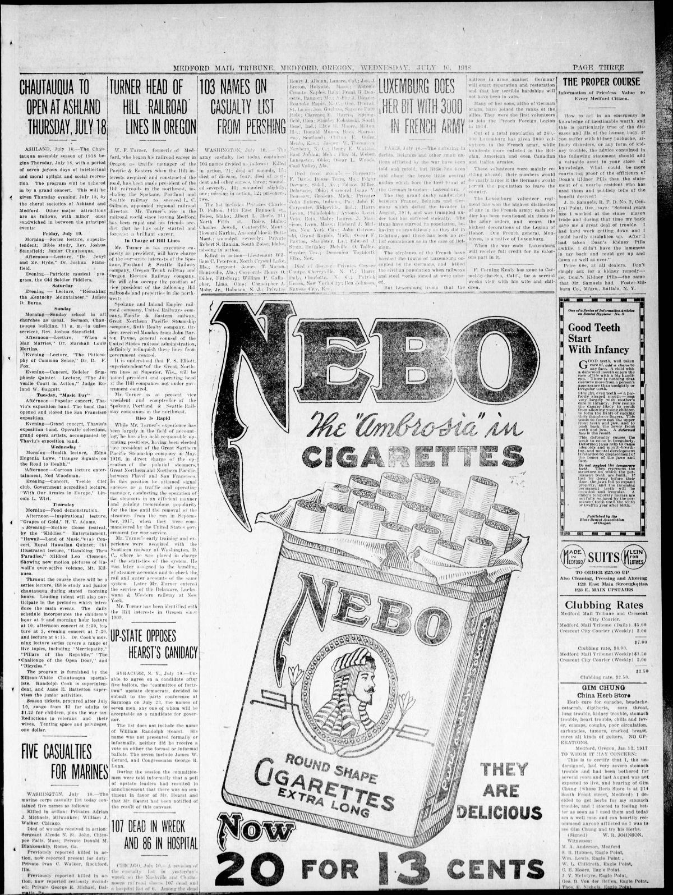

HN HN-409 · July 9, 1918 · Transportation & Maritime > Transportation Accidents & Safety Investigations > Train collisions
Source: Daily Tribune (Terre Haute), p. 1 — original page; Tennessee legislative historical resolution.
Report: An urgent dispatch said about 100 people were killed and dozens injured when two Nashville, Chattanooga and St. Louis Railway passenger trains collided near Belle Meade. It described crushed coaches, fire, and overwhelmed rescue teams.
Assessment: The Dutchman's Curve wreck happened. Tennessee's commemorative record cites 101 dead, a count it also notes has been challenged over time. The newspaper's figure is preliminary but close; purported causes in first dispatches are not substitutes for complete railroad investigations.
Authentic images retrieved from Historic Oregon Newspapers (University of Oregon). Article crops are located using the archive's own OCR word coordinates and rendered at native crop resolution; article clips are assembled from the archive's own article-block images; page scans are reduced-size access renditions. No images were generated, mocked, or retouched.



Not yet acquired. Queued for provider-specific acquisition testing (see source-acquisition manifest).
URL (preserved verbatim): https://newspapers.library.in.gov/?a=d&d=DT19180709.1.1
Saved research report: Historical_Newspaper_Event_Research_403-427_2026-10-23.md
Evidence note: A newspaper report means a historical publication made a claim; it does not establish that claim as fact. Contemporary reporting is separated from later scholarly context and our own assessment.